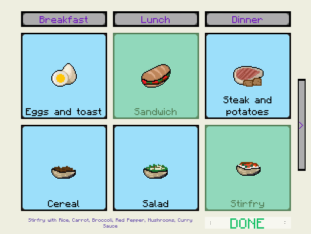

Meal Planner, also known as "the graph theorist's approach to meal planning", is an application made in Unity to help plan meals. Modern meal planning apps tend to fall into two categories: meal constructors and ingredient trackers. Meal constructors take as input whatever odd items you have in your fridge and recommend meals you can make with them. Ingredient trackers do exactly as they suggest, they keep track of all your ingredients, notify you when perishables are about to go bad, and suggest meals that you can make with what you've already got in your fridge.
The problem with meal constructors is that they are one-time use and short-term result. You use the application when your fridge contents are more mismatched than polka dots and stripes, and the effect is only good for the one meal it suggests.
The downside of ingredient trackers is the constant effort of updating your pantry contents. Even with helpful tech such as barcode scanners, you need to update everytime you get new groceries. Again, meal recommendations are based on your current ingredient list and only stretch as far as your list does.
The graph theorist's approach to meal planning is a one-time use, long-term result meal planning application. You use it once before a grocery shop to plan meals that last an entire week. Its goal is to avoid situations where you have to make dinner with only bananas, rice and a can of beans. How do we do that? With the power of math! By modelling meals in a graph, we can easily see how to optimize ingredient usage in meals. A meal is represented by a vertex, and two meals share an edge if they have an ingredient in common. You choose meals that you like from an inventory, and a week long meal plan is computed based on what you picked and what meals relate to each other best. A list of ingredients tells you what you need to buy today to be prepared for the future.
This is a work still in progress.
